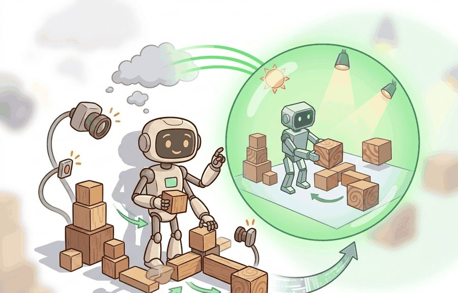
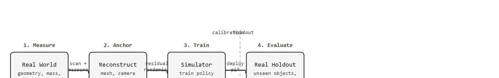

"Scan the room, reconstruct it in simulation, train a policy, send it home. The physical world is both the source and the destination."
Section 13.5

This section assumes familiarity with domain randomization fundamentals from section 13.1 and the simulator fidelity concepts introduced in section 13.3. The reconstruction and calibration-split discipline introduced here is extended in section 13.6, which compares randomization, realism, and hybrid strategies on a shared transfer-readiness panel. The real2sim2real loop also recurs in Part V alongside hardware-in-the-loop deployment, where the same calibration-versus-holdout split governs final physical validation.
A robot arm fumbles a foam cube in simulation, then handles a metal bolt in the real lab without a single real training trial. That transfer works because someone spent an afternoon with calipers, a structured-light scanner, and a friction rig turning the real workspace into simulator geometry. Cheap 3D scanning and neural radiance fields have made that afternoon routine rather than heroic, which is why real2sim2real has moved from research curiosity to production pipeline in the 2022-2024 period.
The practical objective is to close the loop: scan real objects and scenes, anchor simulator parameters to measurements, randomize only the residual uncertainty, and evaluate on a held-out real set that never touched calibration. Done correctly, the simulator explains exactly what it measured, what it inferred, and what it left random.
Hand a robot a mesh that looks flawless under any camera angle, and it can still drop the object on first touch: the scan captured every pixel of the surface and not one newton of its friction. Closing that gap is what makes real2sim2real operational, and it starts by separating reconstruction inputs, such as scans, meshes, camera calibration, object dimensions, and contact measurements, from evaluation outputs such as real success, pose error, slip, collision, or recovery rate.
The goal is to build a simulator that is anchored to reality without becoming a benchmark mirror. A digital twin should explain what was measured, what was inferred, and what remains randomized.
Reconstruction is not automatically evidence. It becomes evidence when the calibration set, reconstructed parameters, residual randomization ranges, and untouched real holdout set are all named.
Figure 13.5A shows the loop end to end: a real object is scanned, its mesh is imported into the simulator, the policy is trained there with randomization, and the trained policy is deployed back onto the physical object.
Consider a specific case. In the OpenAI dexterous hand project (Andrychowicz et al., 2019, "Learning Dexterous In-Hand Manipulation"), the team measured a physical Rubik's cube with calipers and structured light. They anchored the simulator mesh to those measurements (face length 57 mm, corner radius 3 mm), then randomized residual friction (coefficient 0.5 to 1.5), mass, and appearance around those anchors. The held-out evaluation used cubes from a different production batch. Transfer succeeded on foam cubes and gilded cubes the policy had never seen: residual randomization covered manufacturing variation while the anchored geometry kept the contact model plausible. That sequence, measure, anchor, randomize residual, evaluate on held-out objects, is the real2sim2real loop in practice.

A policy trained in an unmeasured simulator is not a transfer candidate; it is a simulation artifact waiting to fail on contact with the real world.
The real2sim2real loop has four steps. First, measure the real environment: geometry, material appearance, camera calibration, object dimensions, mass, friction, and task layout. Second, reconstruct an asset or scene representation. Third, randomize residual uncertainty around the reconstruction, because the scan is never the whole world. Fourth, evaluate transfer on real conditions held out from reconstruction. The payoff is concrete. In the dexterous manipulation literature (as of 2024), anchored reconstruction with residual randomization achieved over 80% real transfer success on representative benchmarks. Policies trained in a generic simulator without any scene measurement fell below 20% on the same objects. Anchoring the reconstruction narrows the randomization range from a wide guess to a tight measured interval, and that narrowing makes the difference. A policy trained against a wide unanchored friction range typically needs 40,000 or more rollouts to cover enough of the distribution. The same policy anchored to a caliper-measured interval converges in under 3,000 rollouts, because the simulator no longer wastes episodes on physically impossible configurations.
This is measure, anchor, randomize the residual, and the critical split is calibration versus evaluation. Calibration data may tune mesh scale, camera intrinsics, contact parameters, and lighting priors. Evaluation data must remain separate, otherwise the digital twin can memorize the test room, test object, or test camera path.
Input: Real sensor data $\mathcal{D}_\text{cal}$ (scans, contact logs, images) for calibration; held-out real episodes $\mathcal{D}_\text{hold}$ never used during reconstruction; simulator with parameter vector $\theta$; policy class $\pi_\phi$
Output: Deployed policy $\pi_\phi^*$ with transfer metric $\eta$ measured on $\mathcal{D}_\text{hold}$
So far: split real data into calibration and holdout before touching the simulator, fit anchor parameters $\hat{\theta}$ only from calibration data, randomize a residual range $\delta$ around that anchor to cover what the fit missed, and never adjust $\hat{\theta}$, $\delta$, or the policy after scoring the holdout.
Trace the calibration loop with a single dimension, the face length of a cube, using actual numbers. Suppose four calibration cubes measure 9.8, 10.1, 10.0, and 9.9 cm, and a fifth cube (object_E) is reserved as the untouched holdout.
If object_E had measured 10.8 cm (outside the range), the failure would be labelled a residual range miss, not a policy failure. The numbers make the diagnosis mechanical rather than guesswork.
The mechanism is measured anchoring plus residual uncertainty. Reconstruction narrows the randomization range, and residual randomization covers what the reconstruction did not capture.
The following snippet turns measured object dimensions into a residual randomization range. The simulator is anchored to the real measurement, but the training distribution still covers small reconstruction and manufacturing errors.
# Convert real calibration measurements into residual randomization ranges.
# The holdout object is excluded, so range fitting does not leak evaluation data.
calibration_lengths_cm = [9.8, 10.1, 10.0, 9.9]
margin_cm = 0.3
low = min(calibration_lengths_cm) - margin_cm
high = max(calibration_lengths_cm) + margin_cm
holdout_object = "object_E, unseen during reconstruction"
print(f"length_range_cm=({low:.1f}, {high:.1f})")
print(f"holdout={holdout_object}")holdout_object records what was excluded from fitting. This is the core real2sim2real discipline: use real measurements to anchor simulation, then protect the final test from leakage.The from-scratch fragment is for understanding the calibration split. In a practical system, reconstruction tools, simulators, and robot logs should preserve which real measurements informed the digital twin and which real episodes were reserved for final evaluation.
A real2sim2real plan is evidence only when it names the calibration data, reconstructed parameters, residual randomization ranges, final real holdout, and failure labels. Without that split, a digital twin can become a polished copy of the test set.
The common mistake is reconstruction leakage. If the final evaluation scene was used to tune mesh cleanup, lighting, camera pose, friction, or object scale, the reported transfer score is partly a reconstruction fit.
A near-perfect digital twin does not remove the need for residual randomization. No scan captures the full physical truth. Even the best photogrammetry leaves friction, material deformation, sensor noise, batch-to-batch variation, and contact dynamics uncertain, because a perfect-looking mesh is an appearance model, not a physics model. Reconstruction narrows the uncertainty interval to a measured anchor; residual randomization covers what the scan could not. Drop it, and the policy overfits the calibration object and fails on any real variation the scan missed.
Think of photographing a ceramic bowl to reproduce its recipe. The photos can capture every glaze color and decorative line with perfect fidelity, yet tell you nothing about the clay body's porosity, the kiln temperature used, or whether it will crack under thermal stress. Appearance and material physics are separate layers of truth. A 3D scan of an object is the same kind of photograph: it nails the geometry you can see but leaves friction, deformation, and contact stiffness entirely unmeasured. Residual randomization is the step where you admit that gap and hedge across the plausible range of physical properties the camera never saw.
A lab building a drawer-opening simulator might scan the drawer geometry, estimate handle pose, fit friction from calibration pulls, then randomize handle texture, rail friction, and camera pose around those measurements. The final test should use a different drawer or a different set of pulls that never shaped the reconstruction.
Ambidextrous Robotics (now part of the Ambi Robotics sorting stack) has reported training grasp policies largely in simulation by scanning real parcels and packages, anchoring mesh geometry and mass to those scans, then randomizing residual surface friction and deformation. According to the company's public statements, policies trained this way run on production sortation lines handling large volumes of unseen package shapes per day; exact throughput figures are vendor-reported rather than independently audited, so treat the scale as illustrative of the pattern rather than a benchmark number. The held-out real items reportedly never feed the reconstruction pipeline.
A digital twin is not a trophy. It is a measurement instrument with a calibration log.
A Gaussian splat is a digital twin made of foggy Christmas ornaments. Each ornament knows exactly where it is, but ask them collectively to catch a ball and you discover they are also deeply afraid of physics.
Reconstruction has diminishing returns past the point where residual randomization already covers the remaining gap. A practical signal: if tightening your mesh or friction fit by 10% does not change real holdout performance, the bottleneck has shifted to policy capacity, perception noise, or task specification rather than simulator fidelity. At that point, investing further in scan quality or contact-parameter tuning wastes calibration budget. The better action is to widen the residual randomization range or collect more diverse real holdout episodes to surface the true failure mode.
1. Physics-aware Gaussian splatting for contact-rich manipulation. Standard 3D Gaussian splatting encodes appearance but not contact geometry or surface friction. A 2024-2025 wave of work adds physics priors directly to the splat representation. PhysDreamer (Zhang et al., 2024, Cornell and MIT) learns material elasticity fields jointly with the visual reconstruction, enabling splat-derived simulators that produce plausible deformation responses without a separate FEM mesh. The open question for real2sim2real is whether the inferred material parameters transfer reliably across object instances with different manufacturing batches, or whether per-object recalibration is still required before each deployment.
2. Generative scene augmentation as a complement to physical reconstruction. Rather than scanning every target object, 2024-2025 methods use large video and image generative models to hallucinate plausible object variants around a single reference scan. RoboGen (Wang et al., 2024, CMU and UC Berkeley) generates task-relevant object arrangements and procedural reward functions from language goals, then trains manipulation policies in those generated scenes. This sidesteps the scanning bottleneck for common household categories but introduces a new calibration problem: the generative prior may not match the friction or mass distribution of real objects in the target environment.
3. Real-time digital-twin updating from onboard sensing. Static reconstruction followed by a fixed sim-to-real transfer is giving way to closed-loop pipelines that update the digital twin from robot perception during deployment. GROOT (Nvidia Research, 2024) builds object-centric 3D Gaussian models from wrist-camera streams and uses them to continually refine the policy's internal scene representation at inference time, without retraining. The underlying challenge is deciding when incoming sensor data should trigger a twin update versus when it should be treated as residual noise to be covered by existing randomization ranges.
Open problem for PhD research. All three directions assume that a contact-parameter calibration set can be collected before deployment. For in-home service robots this is impractical: the robot encounters novel objects continuously. An open problem is active real2sim calibration under a tight interaction budget, where the robot must choose a small number of exploratory contacts (pushes, grasps, tilts) that maximally reduce uncertainty in the simulator's contact parameters for the current object, then commit to a policy without further calibration trials. Existing active-learning methods operate over fixed parameter grids and do not account for the cost of failed grasps during calibration itself.
If a scan looks photorealistic but the robot still drops the object on first contact, which part of the reconstruction was wrong? That question is not rhetorical: the answer determines whether you re-scan, refit friction, widen the residual range, or collect more holdout data.
Answering that diagnostic question demands understanding where the geometry came from in the first place, which is why the reconstruction method itself deserves a closer look. Neural scene reconstruction matters for embodied AI because a robot must interact with geometry, not pixels. A policy trained in a simulator with wrong object dimensions or misplaced surfaces will produce forces and contact events that never occur on the real robot, widening the reality gap that transfer is meant to close, causing grasps to slip, collisions to go undetected, and recovery behaviors to trigger on phantom contacts. Accurate geometry from reconstruction directly reduces this mismatch before any randomization is applied.
The mechanism converts a set of posed RGB images into a volumetric or mesh representation. Neural Radiance Field (NeRF) methods optimise a neural network to predict color and density at any 3D point, then extract a surface mesh via marching cubes (an algorithm that converts a 3D grid of density values into a triangle mesh by finding the surface where density crosses a threshold). Gaussian splatting instead fits millions of oriented ellipsoids to the scene, each storing position, scale, rotation, opacity, and spherical-harmonic color coefficients (a compact way to encode how an ellipsoid's color changes with viewing angle, so the same point can look different from different cameras), then rasterizes them at query viewpoints. Both methods require camera poses obtained from structure-from-motion (a technique that estimates camera positions and a sparse 3D point cloud by matching features across many overlapping photos), and both produce appearance-accurate geometry that can be imported into a physics simulator after mesh simplification and contact-parameter fitting.
Can you name the calibration set, reconstructed parameters, residual ranges, final holdout set, and leakage guard? If not, the real2sim2real experiment is still too vague.
Knowing how NeRF and Gaussian splatting produce geometry is only half the story; the other half is the mindset that decides how much to trust that geometry once it lands in the simulator.
real2sim2real and asset reconstruction become useful when the simulator is treated as an estimate with uncertainty. The reconstructed asset is the center of the distribution, not the full distribution.
The graduate-level habit is to separate three claims. The reconstruction claim says the digital twin matches measured calibration data. The residual claim says remaining uncertainty is randomized across plausible ranges. The evidence claim says final real performance is measured on conditions excluded from reconstruction.
| Tool or Library | Role in the Topic | Builder Advice |
|---|---|---|
| Photogrammetry or scan pipelines | Asset geometry capture | Use them to anchor mesh scale, object shape, and scene layout before adding residual randomization. |
| Neural scene reconstruction | View and appearance recovery | Use it when camera images can reconstruct useful appearance priors for the simulator. |
| MuJoCo or MJX | Fitted physical parameters | Use it when reconstructed geometry must be paired with mass, friction, damping, and actuator ranges. |
| ROS 2 bags | Calibration and holdout bookkeeping | Use them to separate episodes that fit the digital twin from episodes that test transfer. |
| LeRobot | Real policy validation | Use it to compare reconstructed-sim training against real trajectories and task outcomes. |
A robust implementation starts with a provenance record. Code Fragment 1 above is the seed of that record: it ties the calibration source and residual range to the named holdout, and a production version extends it to log the leakage guard beside the transfer metric.
Expected output: the printed trace should expose calibration source, residual randomization, transfer metric, and leakage guard. If one of those fields is missing, the example is not yet an evaluation artifact.
When real2sim2real fails, separate scan error, mesh simplification error, contact-parameter miss, residual range miss, perception mismatch, and policy mismatch. Then adjust only the suspected reconstruction or residual range and rerun on the same final holdout. This preserves the evidence value of the holdout panel.
real2sim2real is useful when reconstructed assets anchor simulation, residual randomization covers uncertainty, and final transfer is measured on real conditions excluded from the reconstruction process.
Beginner (weekend): Tabletop object scanner with MuJoCo residual randomization. Use a phone and a free photogrammetry app (Polycam or KIRI Engine) to scan a household object, import the resulting mesh into MuJoCo, measure the real object with a ruler, and write a Gymnasium wrapper that randomizes mass and friction within a measured interval around the caliper values. The key challenge is converting an exported OBJ mesh into a valid MuJoCo MJCF body with collision geometry without introducing phantom contacts that break the contact model.
Intermediate (1 to 2 weeks): Drawer-opening policy with real2sim2real calibration split. Scan a single real drawer unit using Nerfstudio, export a textured mesh into Isaac Lab, fit rail friction from 20 calibration force pulls logged via ROS2 bags, train a MuJoCo or Isaac Lab policy with residual randomization around the fitted friction, then evaluate transfer on 10 holdout pulls never used during reconstruction. The key challenge is maintaining a strict calibration-versus-holdout split across the ROS2 bag collection, mesh fitting, and Isaac Lab training pipeline so the reported transfer metric is not contaminated by reconstruction leakage.
Intermediate (1 to 2 weeks): LeRobot imitation baseline vs. sim-trained policy on a shared real holdout. Collect 50 real teleoperation trajectories for a pick-and-place task using LeRobot, use half for behavior cloning and use the other half as a held-out evaluation panel, then train a separate policy in PyBullet on a reconstructed scene mesh and compare real success rates on the same holdout. The key challenge is ensuring that the PyBullet reconstruction uses only the calibration half of the trajectory set so both policies face a fair, uncontaminated evaluation panel.
Goal. Empirically show that anchoring a randomization range to a measurement converges faster and transfers better than a wide unanchored guess.
Tools. Python 3, mujoco (pip install mujoco), gymnasium, and a tabletop push or slide task (the built-in mujoco sliding-block example, or a minimal MJCF with one box on a plane and a constant push force).
Setup. Treat a chosen friction coefficient (for example 0.8) as the unknown real value. Build two training configs: (a) anchored, sampling friction uniformly from a tight measured interval [0.7, 0.9]; (b) unanchored, sampling from a wide guess [0.1, 1.5]. Train an identical PPO or simple policy in each for the same number of rollouts.
What to vary. The residual margin width $\delta$ around the anchor (try 0.05, 0.1, 0.3), and the true held-out friction value (0.75, 0.8, 0.85, and one outside the range like 1.2).
What to observe. Rollouts-to-convergence for each config, and final success rate when deployed against the held-out friction. You should see the anchored config converge in far fewer rollouts and match or beat the wide config on in-range holdouts, while both fail on the 1.2 outlier, confirming that residual range misses produce a distinct, diagnosable failure mode. Budget 15 to 30 minutes including a short training run.
Plan a real2sim2real workflow for one object or room. Specify calibration measurements, reconstructed parameters, residual randomization ranges, final holdout conditions, and the leakage guard.
Section 13.6 → compares randomization, realism, and hybrid strategies on one shared transfer-readiness panel.
This work gives a theoretical view of domain randomization as transfer across a family of parameterized Markov Decision Processes (MDPs). Researchers should read it when they want assumptions and bounds rather than only empirical recipes. Readers should connect this source to real2sim2real and asset/scene reconstruction when deciding what is reusable, what is benchmark-specific, and what must be remeasured.
This paper studies randomized dynamics for robotic control transfer. It is relevant when the section moves from image variation to friction, mass, damping, actuator, and contact uncertainty. Readers should connect this source to real2sim2real and asset/scene reconstruction when deciding what is reusable, what is benchmark-specific, and what must be remeasured.
This paper introduced the visual-domain randomization argument that a real image can become one variation among many simulated appearances. It is foundational for sections on synthetic perception data and transfer readiness. Readers should connect this source to real2sim2real and asset/scene reconstruction when deciding what is reusable, what is benchmark-specific, and what must be remeasured.
NVIDIA. "Omniverse Replicator Documentation."
Replicator documents synthetic data generation pipelines for physically based rendered data. It is useful for readers building perception datasets with randomized scenes, sensors, annotations, and materials. Readers should connect this source to real2sim2real and asset/scene reconstruction when deciding what is reusable, what is benchmark-specific, and what must be remeasured.
DLR-RM. "BlenderProc Documentation and Examples."
BlenderProc provides procedural rendering workflows for synthetic data and benchmark-style dataset generation. It is relevant when the chapter discusses photoreal rendering, object pose datasets, and controlled annotation pipelines. Readers should connect this source to real2sim2real and asset/scene reconstruction when deciding what is reusable, what is benchmark-specific, and what must be remeasured.